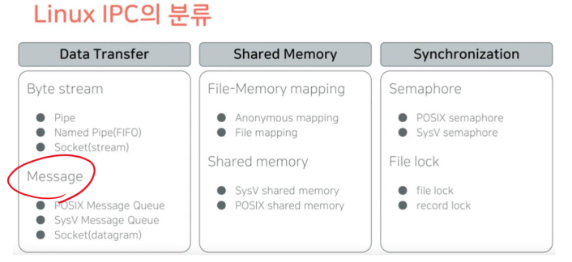
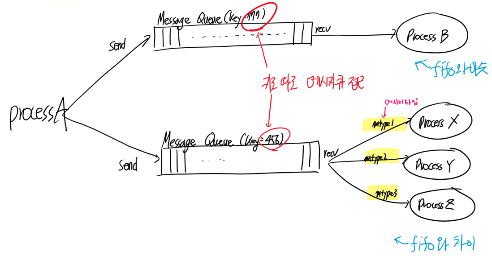
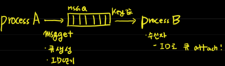
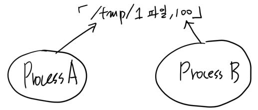
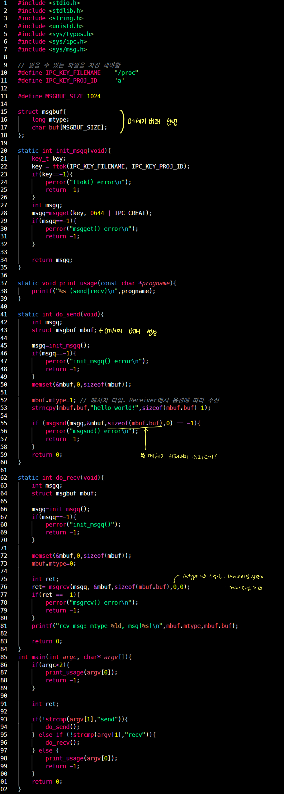
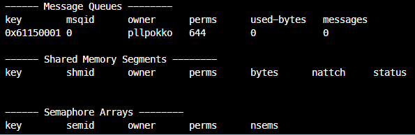
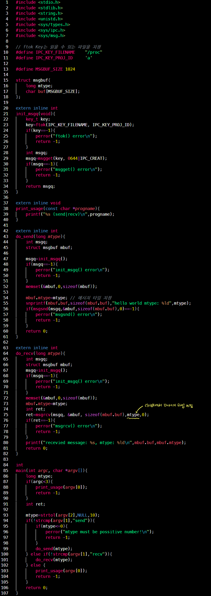
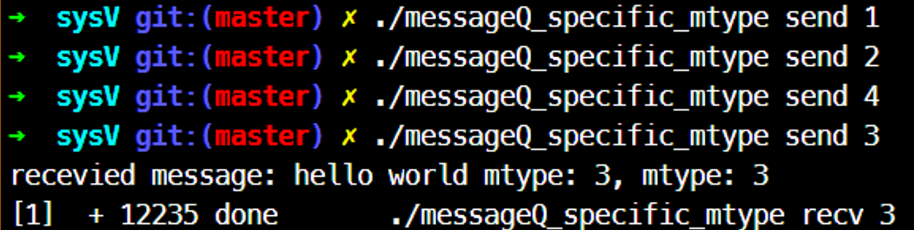

Message Queue - SysV
Message Queue 분류

- Message는 byte stream과 다르게 쪼갤 수 없다. 메세지 자체가 최소 전송 단위
-
POSIX, SysV API 기능이 다르다.
- 메시지 큐 특징
- 메시지 기반 통신
- 바이트 스트림이 아니다.
- 하나의 메시지는 하나의 덩어리
- Unrelated process 사용 가능
- 메시지 기반 통신
SysV MQ vs POSIX MQ
| 항목 | SysV MQ | POSIX MQ | 비고 |
|---|---|---|---|
| Identifer | Special Key | File Descriptor | I/O multiplexing 가능 |
| Management tool | ipcs,ipcrm | mount on virtual file system | 일반 파일에서 사용하는 방법/tool로 조작 가능 |
| Message priority | 미지원 | 지원 | |
| Notification Mechanism | 미지원 | 지원 | |
| Multi-thread safe | 미지원 | 지원 | |
| Message type | 지원 | 미지원 | 1-writer/n-reader 구현이 용이 |
SysV Message Queue
- 메시지 type 지원(SysV에서만 지원)
- 이 메시지는 1번이고, 저 메시지는 2번.. type 정하고 send
- receiver는 난 1번만 받을거야! 가능함
- IPC Key 기반으로 Identify (fd x)
- fd가 아니므로!
- select, epoll I/O Multiplexing IPC 키 값 사용 불가
- read, write, open, close 시스템 콜 사용 불가
- fd가 아니므로!
- Management tool(shell에서 사용 가능한 툴)
ipcs: IPC 사용 중인 것 정보 조회ipcrm: IPC 오브젝트 삭제

메시지 큐가 key에 따라 구분하고, 메시지 타입부여 가능한 것 Focus!
SysV MQ API
- 데이터 송수신
- msgsnd(): 메시지 전송
- msgrcv(): 메시지 받음
- 기타
- msgctl(): 메시지 컨트롤
- msgget(): 메시지 큐의 ID를 구한다.
- ftok(): 키 값 생성
msgget() - 메시지 큐 ID 구하기
#include <sys/types.h>
#include <sys/ipc.h>
#include <sys/msg.h>
int msgget(key_t key,int msgflg);
- 기능: 메시지 큐 ID를 구한다. 옵션에 따라 큐 생성도 가능
| return value | description |
|---|---|
| 메시지 큐 ID | 성공 |
| -1 | 실패 |
| parameter | description |
|---|---|
| key | IPC Key || IPC_PRIVATE - IPC_PRIVATE 지정 시, 새로운 메시지 큐 ID 생성! - 수신자는 ID 얻기 어려움 |
| msgflg | Permission + mask - IPC_CREAT: key에 매치되는 MSGQ ID 없으면 생성 - IPC_EXCL: key에 매치되는 MSGQ ID가 있으면 에러 발생 |

자세한 옵션은 ‘man msgget’
ftok() - key값 구하기
#include <sys/types.h>
#include <sys/ipc.h>
key_t ftok(const char *pathname, int proj_id);
- 기능: file path와 proj_id를 조합해서 key값 구한다. best effort. but unique 보장 안됨
| return value | description |
|---|---|
| IPC Key | 성공 |
| -1 | 실패 |
| parameter | description |
|---|---|
| *pathname | 조합할 파일 경로 파일이 존재해야 하고, readable해야 함 임의의 project ID |
| proj_id | 임의의 project ID ex) ‘a’ |

Key값 하드 코딩하지 말고, 통신해야 하는 프로세스끼리 약속을 정함
msgsnd() - 전송
#include <sys/types.h>
#include <sys/ipc.h>
#include <sys/msg.h>
int msgsnd(int msqid, const void *msgp, size_t msgsz, int msgflg);
- 기능: 메세지 전송
| return value | description |
|---|---|
| 0 | 성공 |
| -1 | 실패 |
| parameter | description |
|---|---|
| msgid | 메세지 큐 ID |
| *msgp | 전송할 메시지 버퍼 |
| msgsz | 전송 메시지 사이즈(mtext의 길이 Byte) |
| msgflg | IPC_NOWAIT: non-blocking I/O 자세한 옵션은 man msgsnd |
struct msgbuf{
long mtype; /* Message Type, must be > 0 && long type */
char mtext[1]; /* 크기는 임의 지정. imgsnd의 msgsz 파라미터엔 이 것의 길이가 들어가야함! */
};
msgrcv() - 수신
#include <sys/types.h>
#include <sys/ipc.h>
#include <sys/msg.h>
ssize_t msgrcv(int msgqid, void *msgp, size_t msgsz, long msgtyp, int msgflg);
- 기능: 메세지 수신
| return | Description |
|---|---|
| 성공 | 실제로 받은 데이터 길이(mtext의 길이, Byte) |
| 실패 | -1 |
| parameter | Description |
|---|---|
| msgid | 메세지 큐 ID |
| *msgp | 메시지 수신 버퍼 |
| msgsz | 최대 수신 길이(mtext의 길이 Byte) |
| msgtyp | 리시브할 메세지 타입. 만약 다음 파라미터인 msgflg를 0으로 하면 막 받는다는 것인데, 그럼 여기도 0 넣으면 됨 |
| msgflg | 내가 수신할 메시지 타입 0: 첫 번째 메시지 수신, 메시지 타입 안보고 수신! 양수: msgtype에 매치되는 첫 번째 메시지 수신(큐니까!), 메시지 타입 중에서!! 첫 째음수: 지정된 절대 값보다 작거나 같은 msgtype에 매치되는 첫 번째 메시지 수신 IPC_NOWAIT: non-blocking I/O MAG_COPY: n 번째 메시지를 복사해서 수신(msgtyp이 idx로 사용 됨)반드시 IPC_NOWAIT와 같이 사용해야함 원래는 수신 후 메시지 큐에서 pop되어야 하지만, pop안시키고 copy를 해버림 MSG_EXCEPT: msgtyp과 매치되지 않는 메시지를 수신 MSG_NOERROR: 메시지 사이즈가 msgsz보다 크면 truncate 시킴 |
msgctl() - 큐 제어
#include <sys/types.h>
#include <sys/ipc.h>
#include <sys/msg.h>
int msgctl(int msqid, int cmd, struct msqid_ds *buf);
- 기능: 메세지 큐 제어
| return | Description |
|---|---|
| 성공 | 0 |
| 실패 | -1 |
| parameter | Description |
|---|---|
| msgqid | 메세지 큐 ID |
| cmd | IPC_STAT: kernel의 msgid_ds 정보 획득 IPC_SET: kernel의 msgid_ds에 설정 IPC_RMID: 메세지 큐 제거 |
| *buf | - |
msqid_ds 구조체 - man msgctl
struct msqid_ds {
struct ipc_perm msg_perm; /* Ownership and permissions */
time_t msg_stime; /* Time of last msgsnd(2) */
time_t msg_rtime; /* Time of last msgrcv(2) */
time_t msg_ctime; /* Time of last change */
unsigned long __msg_cbytes; /* Current number of bytes in
queue (nonstandard) */
msgqnum_t msg_qnum; /* Current number of messages
in queue */
msglen_t msg_qbytes; /* Maximum number of bytes
allowed in queue */
pid_t msg_lspid; /* PID of last msgsnd(2) */
pid_t msg_lrpid; /* PID of last msgrcv(2) */
};
ex1. 메세지 타입 없이 주고 받기
- messageQ_simple.c

ipcs를 쳐보면, ipc를 사용 중인 목록이 뜬다.

아직 남아 있다.
ipcrm 커맨드를 이용해 없애자
$ ipcrm -h # 옵션을 모르면, -h로 찾아보기
$ ipcrm -q 0 # 메세지 큐 아이디로 삭제하는 옵션 -q와 id 0
- 다시 확인해보면 제거되어 있음
ex2. mtype 지정한 메세지 주고 받기
- messageQ_specific_mtype.c


- recv에 메시지 타입 3을 지정하니, send에서 1,2 등 같은 메시지 타입 아니면 받지 않는 것 확인